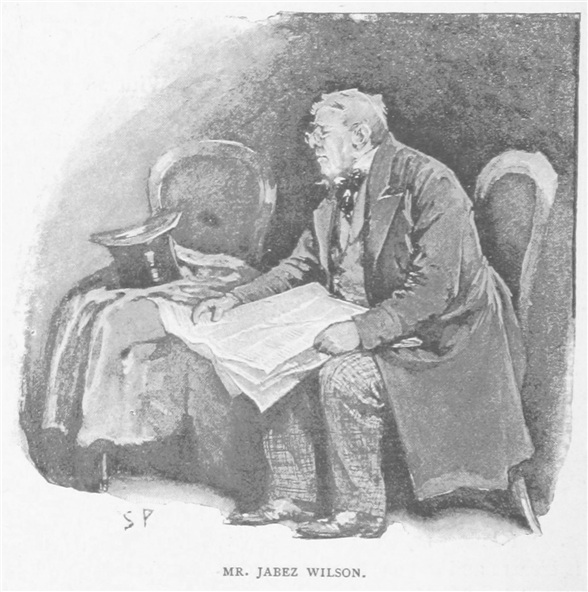
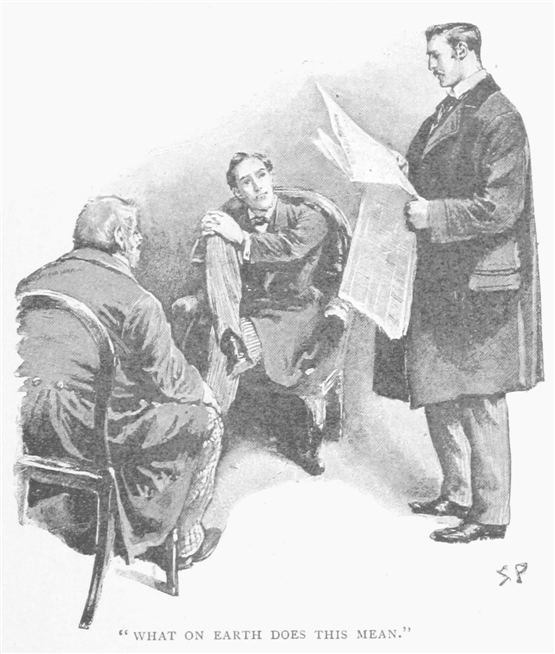
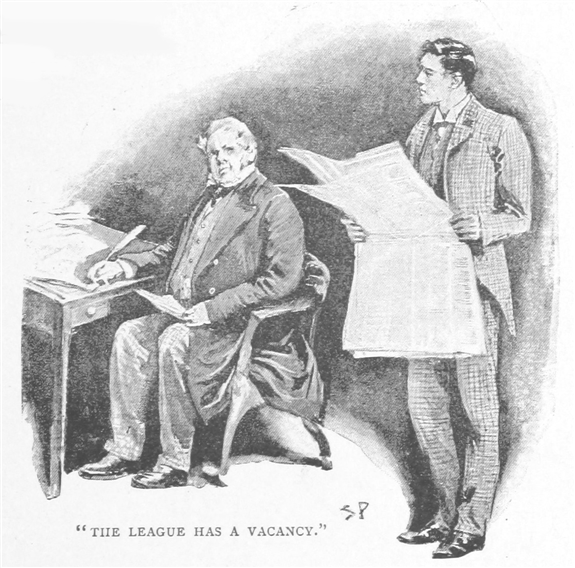
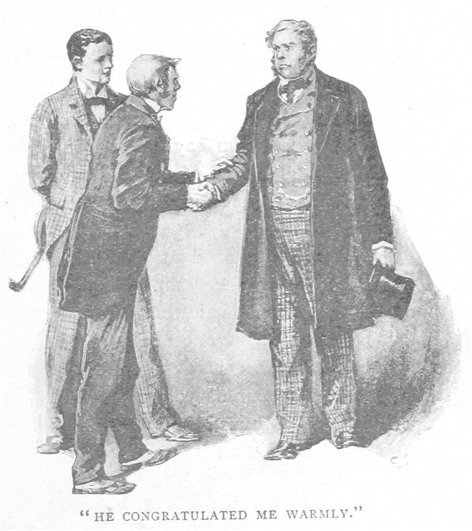
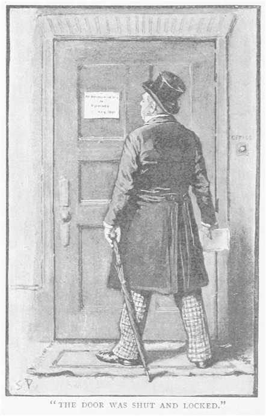
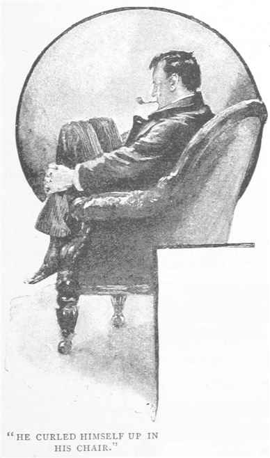
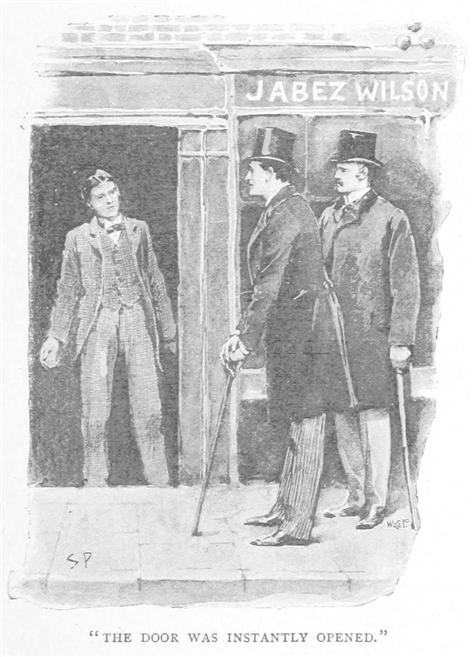
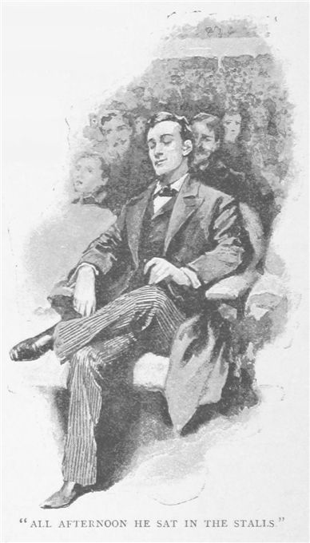
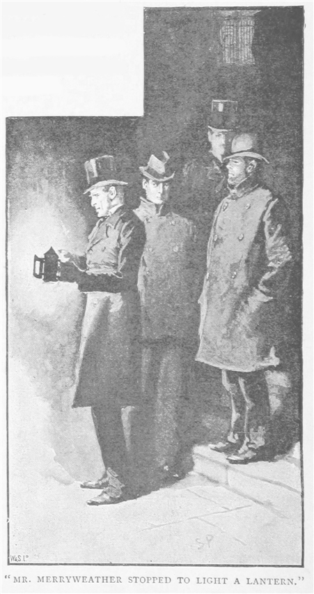
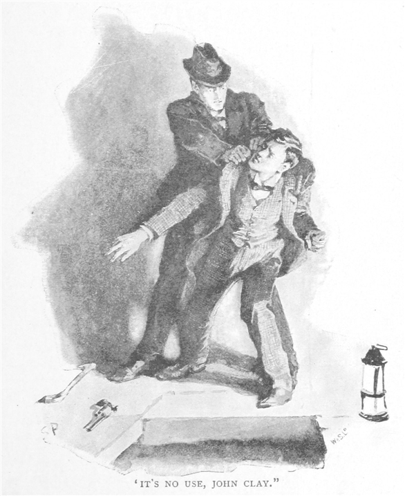

友人シャーロック・ホームズを、昨年の秋、とある日に訪ねたことがあった。すると、ホームズは初老の紳士と話し込んでいた。でっぷりとし、赤ら顔の紳士で、頭髪が燃えるように赤かったのを覚えている。私は仕事の邪魔をしたと思い、詫びを入れてお暇しようとした。だがホームズは不意に私を部屋に引きずり込み、私の背後にある扉を閉めたのである。
「いや、実にいい頃合いだ、ワトソンくん。」ホームズの声は、親しみに満ちていた。
「おや、もしかして仕事中だったかな。」
「その通り。真っ最中だ。」
「では、私は奥で待つとするか。」
「まあ待ちたまえ。この紳士は、ウィルソンさん、長年、僕のパートナーでして。僕はこれまで数々の事件を見事解決してきましたが、その時にはいつも、彼が助手を務めています。あなたの場合にも、彼が大いに役に立つことは間違いありません。」
でっぷりとした紳士は軽く腰を上げただけで、申し訳程度の会釈をしつつも、脂肪のたるみに囲まれた小さな目で、私を疑わしげに見るのであった。
「さあ、かけたまえ。」とホームズはソファをすすめた。自らも肘掛椅子に戻ると、両手の指先をつきあわせた。さてどうしようか、というときにするホームズの癖であった。「さよう、ワトソンくん。君は僕の好みに同じく、突拍子もないこと、退屈で決まり切った日々の生活の埒外にあるものが好きだ。君の熱心さを見ればわかる。逐一、記録をつけるほどだからね。だが言わせてもらえば、僕のささやかな冒険の大半に、色をつけている。」
「思えば、君の事件は面白いものばかりだった。」と私は述べる。
「いつぞやの発言、覚えているね？ メアリ・サザランド嬢が持ってきたごく簡単な事件に赴く前のことだ――不思議な事件や、偶然の一致。我々がそれを求めるなら、我々は現実の中を探しにゆかねばならぬ。現実というのは、どんな想像力をも凌駕するのだから。」
「私からも遠慮なく文句を差し挟んだはずだがね。」
「ふん、でも博士、最後には僕の意見に賛同せねばならぬ。さもなくば、どこまでも君の目の前に事実、事実、事実、と積み重ね続けるまでだ。君の論拠が事実という証拠の前に崩壊して、僕が正しいと認めるまでね。ところで、ここにいらっしゃるジェイベス・ウィルソン氏が今朝、訳ありで僕を訪ねていらしたのだが、そのお話によると、この事件は近頃の中でも頭ひとつ抜きんでたものになりそうだ。いつも言うように、不思議きわまりなく、独創的な事件というものはとかく巨大な犯罪には現れてこない。むしろ小さな犯罪の中に姿を現す。また時折、一体犯罪が行われたのかどうか、それすら判然としないようなところにも現れる。うかがった限りでは、目下の事件が犯罪として扱える、とは明言できない。しかし今回の成り行きは、多くの事件と比べても、異端だと言える。
恐縮ですがウィルソンさん、もう一度お話を聞かせてくださいませんか。といいますのも、友人であるワトソン博士が初めの辺りを聞いてませんし、事件が事件ですから、事細かな部分まであなたの口からできるだけうかがっておきたいと思うからです。いつもなら、事件の成り行きをほんの少し聞くだけで構いません。僕の記憶の中から、似たような何千もの事件の例を引き出し、捜査を正しい方向へ導けます。しかし本件の場合、僕の見たところでも、比較材料のない事件と言わざるをえません。」

恰幅のよい依頼人はいくぶん誇らしげに胸を張った。汚れてしわくちゃになった新聞を、厚地のコートの内ポケットから取りだした。ひざの上で広げ、しわを伸ばしている。首をさしのべ、広告欄に目を落とした。私は男の挙動を観察し、わがパートナーのやり方にならって、男の服装や態度から何者であるかを読みとろうとつとめた。
しかしながら、観察しても何も見えてこなかった。どこをどうしても、ごく一般的な英国商人である。でっぷり太っていて、もったいぶった鈍重な動作。ややだぶついた灰色の
シャーロック・ホームズの鋭い眼に、私のしようとしたことは見抜かれていたようだ。私の疑問に満ちた一瞥に気づくと、笑いながらかぶりを振るのであった。「いや何、わからない。この方が過去、手先を使う仕事にしばらく従事していらっしゃったこと。嗅ぎ煙草を愛用していらっしゃること。フリーメイソンの一員でいらっしゃること。中国にもいらっしゃったこと。近頃、相当な量の書きものをなさったこと――これだけははっきりとわかるのだが、後はまったくわからない。」
ジェイベス・ウィルソン氏は椅子からすっくと立ち上がり、新聞を片方の人差し指で押さえたまま、目をわがパートナーの方へ向けた。
「ど、どうやって、どのようにしてそのことをご存じなんですか、ホームズさん。」ウィルソン氏は驚きのあまり、言葉を口に出す。「その……ああ、ほら、私が手先を使う仕事をしていたことを？ ずばり間違いありませんよ。わしは船大工からたたき上げたんですから。」
「手です、あなたの。あなたの右手、左手より一回り大きいでしょう？ 右手を使って仕事をしていらしたんですから、その結果、その部分の筋肉が発達してしまったのです。」
「ほぉぉ、なるほど。なら、嗅ぎ煙草……フリーメイソンであることは？」
「どうやって見抜いたのか、それは詳しく申さないことにしておきましょう。あなたのように賢い人には無礼に当たりますから。それにとりわけ、フリーメイソンの厳格な規律に背いて、身分を表す円弧とコンパスのブローチをつけていらっしゃいる。」
「あ、本当ですな。うっかりしてました。しかし、書きものに関しては……」
「右の袖口に五インチほどのてかりがあります。左もしかりで、ちょうど机に当たるひじのあたり。つるつるして変色した部分があれば、これは書きもの以外に何で説明づけましょう？」
「ふむ、では中国のことは？」
「魚の
ジェイベス・ウィルソン氏は大笑いし、「いやはや、こんなの初めてだ！」と言った。「わしは初め、あんたが何かうまい方法でも使ったのかと思っとった。だが、結局は何でもないことなんですな。」
「覚えておこう、ワトソン。」ホームズは私の方を向いた。「細々と説明するのは損だ、とね。『未知なるものはすべて偉大なりと思われる。』……僕の評判もあまり大したものでもないが、あまり正直にしゃべっていると、やがては地に落ちてしまう。ところでウィルソンさん、広告は見つけられましたか？」
「ええ、見つけましたとも。」ウィルスン氏は太く赤い指を中ほどの欄に下ろした。「これです。これが事の始まりだったのです。自分自身でご覧になって下さい、ホームズさん。」
私は新聞を受け取り、次のように読み上げた。
赤毛連盟に告ぐ――米国ペンシルヴァニア州レバノンの故イズィーキア・ホプキンズ氏の遺志に基づき、今、ただ名目上の尽力をするだけで週四ポンド支給される権利を持つ連盟員に、欠員が生じたことを通知する。赤髪にして心身ともに健全な二十一歳以上の男性は誰でも資格あり。月曜日、十一時、フリート街、ポープス・コート七番地、当連盟事務所内のダンカン・ロスに直接申し込まれたし。
私は、この奇怪極まる広告を二度読み返した。
「……意味がさっぱりわからん！」口をついて出たのは、こんな叫びだった。

ホームズはくすくすと低い声で笑い、椅子に座ったまま身体を揺すった。これはホームズが上機嫌のときの癖である。「これはこれは、少々常軌を逸した話だ。ほう。」とホームズは呟く。「ではではウィルソンさん、早速取りかかりましょうか。あなたと家族のこと、そして広告に従った結果、生活にどんな影響があったのかを教えてください。博士、君は新聞の名前や日付を書き留めてくれないか。」
「一八九〇年四月二十七日、モーニング・クロニクル紙。ちょうど二ヶ月前だ。」
「うむ、結構。ではウィルソンさん、どうぞ。」
「ええと、それは先ほどシャーロック・ホームズさんに申し上げたとおりで……」ジェイベス・ウィルソンは額の汗を拭い、話を続けた。「わしは
「その見上げた青年の名前は？」シャーロック・ホームズは尋ねた。
「名を、ヴィンセント・スポールディングと言うんですが、青年というほどじゃありません。あれは年の見当がつかんのです。だが、店員としてはとても利口なやつでさぁ、ホームズさん。他で働きゃあ今の倍は稼げる腕があると、わしゃ踏んどるんです。まぁ、あれが満足してるんだから、入れ知恵する必要もありますまい。」
「確かに、その通りです。あなたも運のいい方です。相場以下で従業員を雇えるとは。今のご時世、なかなかそううまくはいかないものです。変わりものという点では、その従業員と広告、甲乙付けがたいと言えます。」
「いや、実は、あれには欠点もありまして……」ウィルソン氏は苦い顔をした。「あれほど写真の世界につかりきった男はそこいらにおりますかな？ あれは見習い修業もせなならんのに、カメラを持ち出して、ぱちぱちぱち、とやっては、ウサギが穴にはいるように地下室へ潜り込んで、写真を現像しよるんです。それがあれの粗なのですが、大まかに見りゃあ、いい仕事をしとります。悪いやつでもありゃしません。」
「察するに、彼はまだ店にいると？」
「ええ、そうですとも。あれと十四になる娘っ子がおります。これが簡単なまかないと掃除をしてくれとるんですわ。わしの家はこれだけです。わしは男やもめでして、家族もありません。わしらは三人でひっそりと暮らしているんですよ。たいしたこたぁできませんがね、一つ屋根の下で夜露をしのぎ、借りた金を返すくらいのことはしております。
そこへこの広告ですよ。この広告が面倒の始まりだったんでさぁ。スポールディング、あれがちょうど八週間前、まさにこの新聞を手に持って、二階から降りてきて言うんですよ、
『ウィルソンの旦那、あっしも髪が赤かったらなぁ。』って、そこでわしは聞き返しましたよ。

『そいつはどうして？』って。
するとあれは言うんです。『なぜって、ここに赤毛連盟の欠員があるんですよ。ここに入ればどんなやつでもちょっとした金持ちになれるんですよ。何でも、連盟の欠員を埋める人間が足りないらしくて、遺産管財人が宙に浮いた金をどうしていいか途方に暮れているらしいそうですぜ。あっしの髪の色が変えられたら、連盟に入って金をくすねてやったのに。』
だからわしは、『何、そいつぁ一体何の話だ？』と聞いてやりましたよ。ほら、ホームズさん。わしは職業柄、出不精なんですよ。こっちから行くんじゃなくて、向こうから来てくれますからね。だから何週もドアマットをまたがないこともめずらしくないんで。……そんなわけで、世間のことにはてんで疎いもんで、ちょっとしたニュースでも聞くと、気になってしまって。
するとあれはね、『赤毛連盟のことをご存じないんですか？』と、眼を丸くしやがるんですよ。
『ないなぁ。』とわしが答えると、
『ふぅん、そいつは不思議だ。旦那は空席にぴったりの資格を持っているっていうのに。』
『それは、どんないいことなんだい？』とわしは詳細を聞こうとしたんですわ。
『まぁ、たった一年に二百ポンドってところですが、仕事はわずかなもんですから、他の仕事の妨げにはなりませんぜ。』
ってな訳でしてね、わしが耳寄りな話だと思ったのも無理ないことでしょう。ここ数年は商売がうまくいってなかったもので、一年に二百ものあぶく銭がありゃあ、とてもありがたいですから。
『詳しく聞かせてくれないか？』とわしはとうとう本腰になってきました。
『ええ。』と、あれはそう言って、あの広告をわしに見せるんです。『旦那、ほらここに空席があるでしょう、問い合わせ先だって載ってますぜ。なんでも、その連盟ってのは百万長者の米国人、イズィーキア・ホプキンズっていう変人が設立したらしくて、そいつ自身が赤毛だったもんだから、同じ赤毛の人間に大きく共感するらしいんです。てなもんで、死んだときに莫大な遺産を管財人に預けて、その利子を使って、自分と同じ色の髪を持つ男が楽に暮らせるように金を分配してくれ、と死に遺したらしいんです。話によると、給料の気前はいいくせして、することはほとんどないときたもんだ。』
わしはそこで少し不安になりました。『だが……志願してくる赤毛の男など、世間には五万とおるだろう？』
だがあれはこう言うんで。『旦那が思うほど多くおりませんぜ。ロンドン市民限定で、立派な大人じゃなくちゃなりません。何でもその米国人は若いときロンドンから身を立てたみたいで、この懐かしい街に何か恩返しがしたいんだとさ。それに赤毛といっても、薄いのや黒っぽいのはダメで、本当にきらきら燃えるような赤毛じゃなくちゃなりません。ほらほらウィルソンの旦那、申し込みたいんだったら、ちょこっとそこに顔を出しゃいいんですが……旦那がたかが二、三百ポンドの金で出向かれることもないですよね。』
そこまで言われてですね、事実、わしゃこの通り髪はまったくすばらしいほどの赤い色合いをしておりますので、このことで競うなら今まであったどんなやつにだって負ける気すらせんのですわ。ヴィンセント・スポールディングは連盟のことに詳しくて、役に立つかもしれんので、その日は店を閉めて、ついてくるように言いつけましたよ。あれも今日一日が休みになるのを喜びましてね、わしらは仕事を切り上げて、広告に示してある住所へと向かったんですわ。
あんな光景は願っても二度と見られませんよ、ホームズさん。北から南から、東から西から、髪の毛の赤いという男がだれも彼も、広告を見て
「それは何とも面白い経験をなされました。」ホームズは言った。ちょうど依頼人が話を中断し、嗅ぎ煙草を多めにつかんで、記憶を新たにしようとしているところだった。
「惹かれる話です。どうぞ、そのまま続けてください。」
「その事務所は二脚の木の椅子と松材の机の他には何もなく、その後ろにわしよりも赤い髪の小男が腰を下ろしていました。そいつは人が入ってくると、志願者それぞれに二言、三言かつぶやいて、何とか粗を見つけては、不適の
『ジェイベス・ウィルソンと申されます。』と、まごついていたわしを、スポールディングは横から口添えをしてくれました。『連盟の欠員を補いたいと希望されています。』
相手はあれの言葉を聞くと、こう答えたんです。『まさに適任だ。この方なら全ての条件を満たしている。こんなにも燃えさかるような赤は……見たことがない。』って、それから、その男は一歩後ずさり、首を傾げて、こっちが恥ずかしくなるほど髪をじっくり見るのです。すると突然、つかつかと歩いてきて、両手を硬く握りしめてですね、合格おめでとうと熱烈に言うんですよ。

それからその相手はですね、『ここで躊躇しては、申し訳が立ちません。』と何やら言い出しましてね、『見え透いたことでも、確かめるまで念には念を入れて……失礼します。』と……！ 男はわしの髪を両手でつかんで、ぎゅう、と引っ張りおったんですわ。わしは思わず、あっ、と叫んでしまいましたよ。すると男はですね、『ん、涙が出ましたね。』とか言って手を離したんですよ。『これで問題ないわけですな。だが、我々は気を付けなければならんのです。今まで、かつらで二度、染色で一度騙されたことがあるんです。靴の縫糸用のロウ、そういったものを使った話もあるくらいで、人間の浅ましさにはあきれるばかりです。』と弁解めいた言葉を言いながら男は窓の所へてくてくと行って、大きな声で、合格者は決まったぞ、のようなことを怒鳴ったんですわ。そうしたら、がっかりした人たちのため息とかざわめきとかが下から聞こえてきて、人並みはぞろぞろっと散らばっていってですね、赤毛の人間といやぁ、わしとその審査員みたいなやつだけになっちまったんですよ。
そこで男は改めて、『私の名は、ダンカン・ロスと申します。』と名乗ったわけでして。それから、こう言ったんです。『我々の気高い慈善者はわたしたちに基金を遺してくれましたが、私もその恩給を受けている者の一人です。ウィルソンさん、あなた、配偶者はおありですか？ 家族はおありですか？』
そんなふうに聞かれたもんですから、わしは、どちらもいない、と答えたんですよ。
すると男の顔がみるみる変わっていくんですわ。
『ああ、困った。』って深刻そうな顔をしてですね、『実に深刻な問題だ。とても残念です。いやね、この基金というのは赤毛の一族を繁栄させ、種の保存をしていくことが目的なのです。残念なことに……あなたが独身だとはね……』
こんな言葉を聞いてですね、わしもがっかりしちまいましたよ、ホームズさん。やっぱり、そうやすやすと連盟員になんてなれるわけないってね。でも、でもですよ、男はしばらく考えてから、まぁいいでしょう、って言ったんですよ。
男はそれからこう言うんです。『他の人なら、この点は致命的になりかねないのですが、このような素晴らしい髪を持った方のこと。ここは妥協して規則を曲げなければなりませんね。では、いつ頃からこちらの仕事につけるのでしょうか？』
そこで、わしはこう言ったんです。『……はぁ、ちょっと都合が悪いのです。店の方も……ありますもので。』
するとですね、ヴィンセント・スポールディングが出てきてこう言ったんですわ。『え、ウィルソンの旦那、そんなこと気にするこたぁありませんよ。店の面倒はあっしにだって出来ますから。』
ですから、わしは次にこう聞きました。『勤務時間というのは、どのくらいのもんなんですかね？』
『十時から二時までです。』
ところで、ホームズさん、質屋業ってのは大抵夕方が中心でさぁ、忙しいっていっても給料日前の木曜と金曜の夕方くらいなもんです。ですから、朝にちょっと稼ぎがあるだなんて願ってもないことだし、その上、うちの店員はよくやってくれますからね、店をまかしておいても大丈夫ってわけです。
『それは好都合です。』って言いまして、次にこう聞いたんです。『で、給料の方は？』
『週給で、四ポンドです。』
『それなら、仕事の方は？』
『ほんの名ばかりのことですよ。』
『いやだから、その名ばかりの仕事というのは？』
『ああそうでしたね、時間内は事務所……いやせめてこの建物の中にいてもらわなければなりません。もし持ち場を離れましたら、あなたは永久にその資格を剥奪されることになりますぞ。遺言状にもその点ははっきりと明文化されています。勤務時間中に一歩でも外にお出でになられたのなら、そこで即、資格剥奪ということになります。』
『一日四時間なんでしょう？ 外に出ようなんて滅相もない。』
と言ったらですね、ダンカン・ロスさんはびしっと言ってのけるんです。『いかなる理由も許しませんぞ。病気でも、用事があったも、また他のどんな理由であってもいけません。ここに必ずいてください、さもないと首ですぞ。』
『それで、仕事といいますのは……？』
『
と言いますから、わしは『承知しました。』と答えたんです。そうすると、
『では、今日の所はさようなら、ジェイベス・ウィルソンさん。あなたが幸運にもこの得難き地位につかれましたことを、謹んでもう一度お祝い申し上げます。』と、男はわしを部屋の外へ送り出しましてね、わしもあれをつれて店へ引き返したんですよ。ですがね、帰ってからも、何を言って、何をしてよいのやらさっぱりわからなくなりまして……それほどわしは自分の幸運に酔いしれてたんでさぁ。
で、一日中そのことばかりを考えていたんですがね、日が暮れるとその酔いもさめてしまったんですわ。というのも、わしは……これはみんな詐欺か悪ふざけにちがいない、目的はよくわからんが、きっとそうにちがいない、と考えるようになったんです。だいたい、どこのどいつがそんな遺言を書いて、大英百科事典を書き写す、そんなつまらない仕事にこんな金を払うんでしょうか。信じられないんですよ。ヴィンセント・スポールディングはね、わしを乗り気にしようとはやし立てるんですが、もう寝る時分になると考えるのをやめにしました。でも……朝になると、まぁとにかく一度行ってみるくらいはしてみようと、そう決心しましてね、インクの小瓶と鵞ペン、フールスキャップ判の紙を七枚買って、ポープス・コートへ出向いたんです。
え、驚きましたし、喜びもしました。まったく話の通りだったんですからね。机が私専用に置いてあって、ダンカン・ロスさんがわしがちゃんと仕事に取りかかるか、見届けに来ていたんです。ロスさんはわしにＡのところから書かせ始めると、部屋を出ていったんですが、ときどきちゃんとやってるかを見に来ていました。二時になると、もう帰っていいってことになってですね、わしの仕事ぶりをえらく褒めてくれましてね、そうしてわしが部屋から出ると、事務所のドアに鍵をかけてしまいました。
来る日も来る日も仕事をしたんです。で、ホームズさん、土曜日になるとロスさんがやって来て、一週間分の給料としてソヴリン金貨を四枚くれたんです。次の週も、その次の週も同じでした。毎日十時にそこへ行って、午後二時にそこを出ます。次第にダンカン・ロスさんは朝に一度しか来ないようになって、そのうちさっぱり顔を見せないようになってしまいました。でも、もちろんわしはその部屋を一歩も出ませんでしたよ。いつ来るかもしれませんから。それにこんなによくてですね、わしにぴったりな仕事をそうやすやすと手放す気にはなれないってもんです。
そんなこんなで八週間が過ぎました。わしは…… Abbots, Archery, Armour, Architecture, Attica ……と写していってですね、もうちょっとやりゃぁ、そろそろＢのところにも取りかかれるかな、と思っていたんです。フールスキャップの代金も相当かさんできてましたからね。わしの書いたものも、棚一段、満杯になろうとしていたんですよ。ですがね、……急に、仕事がふいに……なってしまったんです。」
「ふいに？」
「そうですとも。それもつい今朝のことですよ。いつものようにね、十時に仕事へ向かったんです。でも、扉が閉まって開かんのですわ。すると、扉のパネルの真ん中あたりに、小さな四角いボール紙が
ウィルソン氏は一片の白いボール紙を差し出した。メモ帳くらいの大きさだった。そこにはこう書かれていた。
赤毛連盟は解散する。
一八九〇年十月九日
一八九〇年十月九日
シャーロック・ホームズと私はその素っ気ない声明文と、その向こうにいる残念そうな顔の男を比べ見た。我々の思考回路は緊急停止した。事件があまりにも滑稽であったからだ。我々二人はこらえきれず、大きく笑い崩れてしまった。
「どこが、何が面白いんですか！」と依頼者は叫んだ。赤い髪の生え際まで紅潮していた。「わしを笑うしか能がないなら、どこかよそへ行きますぞ。」
「いや、いや。」ホームズは半ば腰を浮かした依頼者を制し、椅子に押し戻した。「こんな事件を、みすみす世間のやつらに放っておけますか。すがすがしいくらいに特異な事件です。しかし失礼しますが、幾分、愉快な点があるのも確かです。願わくは、扉にあったカードを発見して、あなたはどう行動されたのかお聞かせ願えないでしょうか。」
「そりゃあホームズさん、仰天しましたよ。何をしていいやらわかりませんでした。とりあえず同じ建物の事務所という事務所を尋ね回ったんですがね、どうも誰も知らんようなのです。最後に一階にすんでいる管理人の所へ行きました。その人は会計士なんですけどね、赤毛連盟はどうなったんだ、て聞いてもそんな団体、聞いたこともないって言うんですよ。じゃあ、ダンカン・ロスって男は知ってるか、と聞いたら、そんな名前、初耳だ、って答えたんですわ。
ですからね、『そんなことないだろう、ほら、四号室の紳士だよ。』って言ったんです。
『え、赤毛の方ですか？』
『そうそう。』
すると、管理人はうーん、とうなるんですよ。『その紳士の名前はウィリアム・モリスといいまして、事務弁護士なんですよ。あの部屋は、新しい部屋を借りるまでの仮事務所なんです。つい先日引っ越しましたね。』
『どこに行けば、彼に会えるんですかね？』
『なら、新しい事務所に行くといい。住所は聞いていますから。……ええと、キング・エドワード街ですから、
わしは向かいましたよ、ホームズさん。でも、その住所には膝当ての製造工場があるだけで、ウィリアム・モリスもダンカン・ロスも、誰一人として知っちゃいませんでした。」
「それからどうなさいましたか？」とホームズは先を促した。
「サックス・コバーグ・スクエアの家へ帰りました。うちのあれに相談してみたんですけどね、手の打ちようがないって。ただ、待っていれば手紙でも届きますよ、旦那、ってそれだけ言うんです。でもね、わしは……心の収まりがつかんのですよ、ホームズさん。こんな……仕事がふいになろうっていうときに、手をこまねいてなんかおられんのです。だから……だからですよ、あんたが困った人の相談にちゃんと乗ってくれる、ちゃんと手助けしてくれる、っていう人だと聞いていたからですね、わしは一目散にやってきたわけなんですよ。」
「たいへん賢明です。」ホームズはウィルソン氏にそう答えた。「あなたの事件は、常識の域を超えた事件――喜んで調査しましょう。話から察するに、見かけによらず、たいへんゆゆしき問題となりそうです。」
ジェイベス・ウィルソン氏は熱くなり、「ゆゆしき……ああもちろん！ わしの、わしの大事な四ポンドが！」
ホームズはウィルソン氏の態度にたいして、こう意見した。「あなた個人として、その異常な連盟に不満を抱く、それは筋違いというものです。僕なら逆に、ざっと三十ポンドは得をした。Ａの項、全ての記事を詳細な知識として手に入れただけでも充分なのに、と、そう理解しますね。連盟からは、失ったものより得たものの方が多いはずです。」
「そうかもしれませんが、ホームズさん。わしはやつらを見つけだしたいんですよ。何者で、どうしてわしにあんないたずらを……もし、もしいたずらとしたらですよ、その目的が知りたいんです。まぁ、いたずらにしちゃあ金を使いすぎですがね。わしに三十二ポンドも使ってるんですから。」
「そういう点は、骨折って明らかにして差し上げます。しかしその前にウィルソンさん、二、三お尋ねしたいことがあります。最初に広告を見せに来た、その店員、いつ頃から働いていますか？」
「その一ヶ月くらい前ですな。」
「して、どのように？」
「求人広告を出したら、やって来たんです。」
「来たのは彼一人？」
「いいや、十二人くらいおりました。」
「ではなぜ彼を？」
「使えそうで、それに給料は安くても構わないって言ったもんですから。」
「つまり、半額と。」
「ええ。」
「ヴィンセント・スポールディングの
「小柄ですが、身体は頑丈で、機敏で、三十は越しているのにヒゲもありません。額に、酸で
ホームズは椅子から身を乗り出した。どうやら心が高揚しているようだ。「そんなことだろうと思った。」ホームズはそのままウィルソン氏に尋ねた。「その男の両耳、イヤリングの穴があることに気が付きませんでしたか？」
「ええ、ありましたとも。あれは言うには、若い頃、ロマにあけてもらったとか。」
「ははん！」とホームズは言い、再び物思いに沈むのであった。「そいつはまだ店にいますね。」
「ええ、いるでしょうね。さっき店に残してきましたから。」
「あなたの留守中も、仕事に精を出しているのですか？」
「はい、文句の付けようもないほどに。それに、朝はすることなんてありゃしませんし。」
「よくわかりました。ウィルソンさん、一両日中には意見をお知らせしましょう。今日は土曜日、ですから月曜までには解決できることと思います。」
こうして、我々は訪問客を部屋から送り出した。
「さて、ワトソン。」ホームズは私に話しかけてきた。「今の、君はどう思うね？」
「さっぱりだ。」私は率直に答えた。「たいへん……謎めいた仕事だな。」
「概して、」とホームズは切り出す。「奇想な事件ほど、解ける謎は多い。ありふれて特徴のない犯罪が、真に我々を悩ませる。それはまさしく、ありふれた顔が見分けにくいのと同じだ。しかし、この事件に関しては迅速に動かねばなるまい。」
「これから、どうする？」
と私が尋ねると、ホームズはこう答えた。
「煙草を吸おう。ちょうどパイプ三服分の問題だ。これから、五十分間は話しかけないでくれたまえ。」ホームズは椅子に座ったまま身体を丸めた。足を抱え込み、やせたひざを

「今日の午後、
「今日は一日あいている。まったく暇な稼業だよ。」
「帽子をかぶって、来たまえ。
我々は地下鉄でオルダーズゲイト駅まで行った。しばらく歩くと、サックス・コバーグ・スクエアに着いた。今朝、我々が聞いた奇妙な話の現場である。みすぼらしく、息の詰まるような街で、すすけた煉瓦造りの二階建てがいくつも立っていた。その建物は小さな空き地の四方を囲んでいた。空き地には柵が張り巡らされ、中には雑草のような芝生としおれた月桂樹の茂みがあった。二種の植物は煙にまみれた不快な空気の中、ひたむきに生きようとしているようだ。角の家に行くと、三つの金メッキした球と、褐色の板に白で『ジェイベス・ウィルソン』と書かれた看板があった。あの赤毛の依頼人が商売をしている店だ。シャーロック・ホームズはその店先で足を止める。首を傾げ、店の全景を見据えた。眉は寄せられ、目の奥が光っているように見える。その後、街をゆっくり歩き始めた。また我々が入ってきた角へ向かったかと思うと、家々を鋭く見つめながら引き返してくるのである。最後にはあの質屋の店先に戻ってきた。ステッキで歩道を力強く二、三回叩いてから、店の戸口に近寄っていった。ノックをする。すぐに扉が開けられて、頭の良さそうな男が出てきた。ヒゲはなく、つるつるしていた。男はお入りください、と我々を招いた。
「どうも。」ホームズは多少の謝罪を入れてから、「すまないが、ここからストランド通りへはどのように出たらよいのだろうか。」
「三つ目の角を右、四つ目の角を左だ。」店員は手短に答えると、扉を閉めた。

「頭の切れる男だ、あいつ。」戸口を離れ、我々は立ち去ろうとしていた。ホームズは話を続ける。「私見だが、やつは抜け目のなさで、ロンドンでは四番目だ。大胆さにおいては三番目と言ってもいい。やつと、多少のかかわりがあってね。」
私は口を挟むことにした。「うむ。ウィルソン氏が雇った店員か。赤毛連盟の謎に、一枚かんでいるにちがいない。君があんな事を尋ねたのは、あいつの顔が見たかっただけなんだろう？」
「顔など問題ではない。」
「では何のために。」
「ズボンの膝だ。」
「で、どうだった。」
「予想通り。」
「歩道を叩いた理由は？」
「いいかい、博士。今は話す時間ではなく、観察の時間だ。僕たちは敵地に乗り込んだ
サックス・コバーグ広場を離れ、角を曲がるとすぐその通りはあった。コバーグ広場と比べると、画の表裏ほどの差だった。そこは、中心区の交通を北と西へ導く大動脈の一つである。車道には、行きと帰りの馬車が長い車の流れを作っていた。歩道では、急ぐ歩行者の群が多く、真っ黒になっている。信じがたいことだった。美しい店々や荘厳な事務所が一列に並んでいる。これが先ほどまでいた広場の背中合わせになっている。すたれ活気のなかった広場と裏通りなのだ。
「さてと。」ホームズは街角に立ち、通りをざっと見渡してみた。「ここの家々の配置を覚えておきたい。趣味で、ロンドンの正確な知識を頭に入れておきたい。ここはモーティマー商店、煙草屋、新聞の小売店、シティ＆サバーバン銀行コバーグ支店、菜食料理店にマクファーレン馬車製作会社の倉庫。で、ここから別の区画か。さて、博士。僕たちの仕事は終わった。今度は気晴らしの時間だ。サンドウィッチとコーヒー一杯で一息つこう。それからヴァイオリンの国へ行くのだ。そこは甘美と絶妙と調和のみがあふれている。そこへ行けば、赤毛の依頼者に難題をふっかけられて煩うこともなかろう。」

我が友人は熱心な音楽愛好家だった。また自身も有能な演奏家であり、類い希な作曲家でもあった。午後はずっと劇場の一階特等席に座っていた。大きな幸せに浸り、音楽に合わせ、その長く細い指を静かに揺り動かしていた。このときの静かな微笑やまどろんだまなざしは、獲物を追うときのホームズや、怜悧で容赦なく犯人を追いつめる探偵としてのホームズとは、似つかぬものに思われた。時に私は考える。彼という特異な人間のうちには、この二種の気質が交互に現れるのではないか。百発百中の推理というのは、時折ホームズの心を支配する詩的で瞑想的な気分に対する反動ではなかろうか。この気持ちの切り替わりが、ホームズをけだるさの極地から飽くなき活力へと導くのだ。そして、私がよく知るように、幾日も立て続けで肘掛椅子にゆったりもたれかかりながら、即興曲を作ったり古版本を読んだりしているときほど、ホームズが真に恐るべきときはない。そして突然、追求欲が湧き起こって、あの見事な推理力が直感の高みまで昇りつめ、ついにホームズのやり方に
「君は家へ帰りたいと思っている。そうだろう、博士。」ホールを出ると、ホームズは私の心境を当ててみせた。
「ああ、その方がいい。」
「僕は少々時間を食う用事がある。コバーグ・スクエアの事件は深刻だ。」
「どういうことだ？」
「大それた犯罪を企んでいるやつがいる。だが食い止めるだけの時間はある。確信できるだけの根拠もある。しかし、今日は土曜日だ。事は錯綜するだろう。今晩、君の手を借りるかもしれない。」
「何時だ？」
「十時くらいで充分だろう。」
「では、十時にベイカー街へ行こう。」
「頼む。あと博士、少々危険かもしれないから、君の軍用リヴォルヴァをポケットに忍ばせておいてくれたまえ。」ホームズは手を振り、きびすを返すと、たちまち群衆の中へ消えていった。
私は、自分が周囲の人より頭が悪いとは思っていない。だがシャーロック・ホームズと接していると、いつも自らの愚鈍さを感じ、憂鬱になるのだ。今回の件でも、ホームズが見聞きしたことは、私も同じように見聞きしている。それでもやはり、ホームズの言葉から察するに、ホームズは事件の経過全体だけではなく、これから何が起ころうとしているかも見抜いているようだった。それに引き替え、私と来たら事件の全容がいまだ混沌として奇怪なままだ。ケンジントン区の自宅へ馬車で帰る途中、私はずっと考えていた。百科事典を筆写した赤毛の男の異常な話。サックス・コバーグ・スクエアへの調査。ホームズが別れ際に言った不吉な言葉に至るまで。今夜の探検は何を意味しているのか。なぜ拳銃を持っていかなければならないのか。どこへ行って、何をするのか。ホームズの口振りでは、質屋のつるつる顔の店員は手強い男らしい。深い企みがあって動いているらしい。私は謎のパズルを解きほぐそうとしたが、絶望し、あきらめ、夜になって全貌が明らかになるまでこの事は放っておくことにした。
私がその夜、家を発ったのは九時十五分過ぎであった。ハイド
「さあ！ これで全員揃った。」ホームズは皆に呼びかけた。ピー・ジャケットのボタンを掛けながら、棚から丈夫な狩猟
「博士、また一緒に捜査することになりましたな。」とジョーンズはもったいぶった調子で言う。「ここにおられる友人は狩猟がとてもうまいから、追いつめた後に、引っ捕らえるだけの老犬がいればいいんですと。」
「終わってみれば
「なぁに、ホームズさんのことだから大船に乗ったつもりで。」ジョーンズは自分のことのように、横柄に言ったものだ。「この人にはちょっと独特の方法があるんですよ。言って気を悪くなさらないといいのですが、あえて言わせてもらいますよ。少々理屈っぽくて空想に耽ることが多い、けれども、彼は立派な探偵であります。これまでも一、二度ばかりでなく、例えばショルトォ殺人事件やアグラ財宝事件でも、本職の
「ほう、ジョーンズさん、あなたがそう言われるのなら、大丈夫ですな。」新参者のメリウェザー氏が敬意をこめて言った。「しかし……ブリッジの三番勝負ができなくて残念ですなぁ。土曜日の夜には毎週欠かさないのに、しないなどということは実に二十七年振りでして……」
「今にご覧あれ、」とシャーロック・ホームズは言う。「今夜は今までとは違います。より高い賭け金で勝負してもらうことになります。心が
「ジョン・クレイは殺人犯で窃盗、その上、貨幣偽造をして、その金を自分で使ってやがるやつだ。若造だが、メリウェザーさん、やつはその道では右に出るものがいないほどの悪党で、……私はロンドンのどんな悪党よりも、こやつにこの手錠を掛けてやりたいんです。この若造、ジョン・クレイは抜きん出た男ですよ。祖父は王族出の公爵で、こやつ自身もイートン校からオックスフォード大学の出です。やつは手先も器用、さらに狡猾とあって……密告があって捕まえようとしても、いつだって立ちまわった跡だけが残っていて、やつそのものの所在はどこへやらだ！ スコットランドで押し込み強盗をしたと思えば、次の週はコーンワルで孤児院の設立資金とかぬかして金を騙し集めていたりしやがる。長年、やつを追っているんだが、まだこの目で見た事がない。」
「今宵はなんと光栄なことか。ジョン・クレイ先生を君たちにご紹介できるのだから。彼とはちょっとした関わり合いがあるが、君の意見に賛成だ。確かにこの道にかけては第一人者である。さて、十時過ぎになりました。出発の時間です。二人は前のハンソム馬車にご乗車を。ワトソンと僕は後ろからついていきます。」
馬車に乗ると、シャーロック・ホームズは堅く口を閉ざしてしまった。辻馬車のシートに深く座り、この午後に聴いた旋律を口ずさんでいた。迷路のような街並みはガス灯に照らされていた。そうして、我々はついにファリントン街へ入った。
「もうすぐだ。」ホームズはようやく口を開き、説明をする。「あのメリウェザーという男は銀行の重役だ。この事件に直接利害関係がある。また、ジョーンズくんがいてくれた方がいいと判断した。悪い男ではない――本職では全くの無能だが。まあ、取り柄も一つくらいはあるな。殊に勇敢さはブルドッグのようである。粘り強さもロブスターのようだ。捕まえたものを離さないという点でね。さて、着いたか。前の二人も待っている。」
朝と同じくして、にぎやかな大通りだった。我々が今朝、出向いた通りだ。馬車を帰らせ、我々はメリウェザー氏の案内で狭い路地に入った。また氏は通用門を開けてくれ、我々はくぐった。中には短い廊下があり、奥には頑丈な鉄扉があった。また開けると、石造りの

「上からの襲撃に対しては、心配ないということか。」とホームズは述べた。ランタンを掲げ、周りを注意深く見回した。
「下からだって……」とメリウェザー氏はそう言い、ステッキで床に並んだ敷石を叩いたが、「ん、何だ……空っぽみたいな音がする……！」顔を上げ、驚きのあまり口に出したのだ。
「どうか静粛に。」ホームズはたしなめた。「この我々の探検、全て台なしになさるつもりですか？ ご配慮いただけるのなら、あの箱の一つに座り、どうか邪魔をならさぬよう。」
メリウェザー氏はしょげ込み、木箱に腰を下ろした。気分を害したような顔をしていた。ホームズは気にする様子もなかった。床にひざをつき、ランタンをかざした。敷石と敷石の間を、拡大鏡で綿密に調べ始めた。二、三秒で満足なものが得られたのか、すっと立ち上がった。拡大鏡をポケットにしまう。
「少なくとも、まだ一時間の余裕はあります。」ホームズは皆に語りかけた。「あの善良なる質屋さんが熟睡するまでは、やつらも身動きがとれない。だが寝てしまえば、一分一秒を争ってやってくる。仕事を手早く済ませてしまえば、逃亡する時間も長くなるからだ。博士、もう気づいているね？ 僕らはロンドンの一流銀行、
「
「仏蘭西金貨……？」
「そうです。わたくしどもは数ヶ月前、資本強化をする必要がありまして、そのため、フランス銀行から三万枚のナポレオン金貨を借り入れたのです。ところが、この金貨の封を切る必要がなくなり、この地下室に眠らせておいたのですが……それが世間に知れ渡ってしまいまして。今、私が腰掛けている木箱の中に、鉛の箔で包まれたナポレオン金貨が二千枚入っているんです。銀行の一支店が保有するには、あまりにも多すぎるものですから……重役会でも問題になっていたんですが。」
「無理もありません。」ホームズは述べた。「では、今のうちに僕らも手筈を整えておきましょう。一時間もしないうちに、事件は大詰めを迎えるでしょう。それまでの間は、メリウェザーさん、このランタンに覆いをかけなければなりません。」
「暗い中で座れと？」
「あいにくですが。実は、ポケットにカードを一組忍ばせて置きました。二人一組になって、あなたの好きなブリッジを今夜も、と。しかし、敵の準備がかなり進んでいますので、明かりを付けておくのは危険です。ではまず第一に、僕らの配置を決めておきましょう。不敵なやつらです。袋小路に追いつめても、油断すると痛い目に遭います。僕はこの木箱の影に隠れますので、あなたはそちらへ身を隠してください。それから、僕がやつらに明かりを当てます。みなさんは直ちに飛び出してください。万が一、やつらが発砲でもしたら、ワトソン、ためらわずやつらを撃ってくれたまえ。」
私はリヴォルヴァの撃鉄を起こした。身を隠している木箱の上に据え置いた。ホームズはランタンの前に覆い板を差し入れた。辺りは漆黒の闇に包まれた。経験したことのない完全なる闇。金属の焦げる匂いがした。明かりはまだそこにあるのだ。いざというときにはすぐに点けられる。我々には安心感があった。が、私はというと、神経が徐々に張りつめていったのだ。強い期待と不安。不意に暗く静まった地下室。うすら寒くじめじめした空気。胸が締め付けられるような感覚……
「退路はただ一つ。」ホームズはささやく。「建物の中を抜け、サックス・コバーグ・スクエアへ出る道のみ。ジョーンズ、手配の通りにしてくれたか？」
「表に警部一人、巡査二人を見張りに。」
「出る穴は全て塞げた。あとは、ただ静かに待っていよう。」
……なんと長かったことか！ 後でホームズと私のメモを比べると、どうやら一時間と十五分しかなかったらしい。私は夜も明け、暁ばかりになっていたと思いこんでいたのに。私の四肢は疲れのため、棒のようになっていた。わずかな身動きも差し控えていたのだ。神経は過度に張りつめられていた。聴力はとぎすまされていた。皆の穏やかな息遣い。大柄なジョーンズの深々と吸い込む息。メリウェザー氏のため息めいた細い息遣い。私が身を潜めている場所から、箱越しに床が見えた。すると突然、一条の閃光が目を貫いた。
初めは、敷石の上で黄色い光が弾けただけだった。だが光は次第にのび、黄色い光芒となった。何の前触れもなく床に亀裂が走った。そこから手が現れた。女のように白い手であった。手は光の届く狭い範囲をまさぐった。一分、あるいはもっと経っただろうか。指をもぞもぞさせていると思えば、手がにゅっと出てきた。だがすぐに引っ込んだ。残っているのは敷石の亀裂から漏れ出る、黄色い光のみ。辺りは元のように闇である。
静寂はつかの間のものだった。物が張り裂かれる激しい音。白く、大きな敷石がひっくり返されたのだ。ぽっかりと四角い穴があいている。ランタンの光芒が漏れ出てくる。穴の縁から、じわじわと顔が浮かび上がってくるのだ。鼻筋が通っていて、若々しいことが次第にわかってくる。顔は辺りを鋭く見、穴の両端に手を掛けた。肩、腰までも姿を現す。片ひざを縁によりかけて、軽々と穴の上に上がった。続いて、男は後に続く仲間を引き上げた。男と同じく華奢で顔は青白い、乱れた炎の赤毛を持つ男だった。
「……誰もいない。」先に上がった男がささやく。「たがね、袋も持ってきただろうな。……ん、何ィ！ 飛び込め、アーチィ、飛び込むんだ、
シャーロック・ホームズが飛び出した。侵入者の襟首をすばやくつかむ。もう一人は穴の中へ飛び込んだが、服の引き裂かれる音がした。ジョーンズが服の裾をつかんだようだ。リヴォルヴァの銃身がきらめいた。ホームズの狩猟鞭が男の手首に振り下ろされた。拳銃が床の敷石に落ちた。がちゃりと音がする。

「無駄だ、ジョン・クレイ。」ホームズの穏やかな声。「君に反撃の余地はない。」
「どうやらそうらしい。」相手は極めて冷静に答えた。「だが、俺の仲間はうまく逃げおおせたようだ。服の端だけを貴様の手みやげにしてな。」
「表には三人の警官が待ちかまえている。」ホームズは告げた。
「おや、へぇ。貴様らにしてはよくやったもんだ。お褒めの言葉を掛けてやろう。」
「それをそっくり君に返そう。」ホームズは答える。「君の赤毛連盟、斬新で効果的だった。」
「お前もすぐ仲間に会わせてやるよ。」ジョーンズが横から口を挟む。「あいつ、穴潜りにかけては俺よりもうまいようだな。手を差し出せ、手錠をはめてやる。」
「貴様の不潔な手で、俺に触れてくれるな。」我々に包囲された犯人は言葉を吐き捨てたが、すぐに手錠をはめられた。「貴様はしらんだろうが、俺の身体には王家の血が流れているんだ。口を利くときには、そう、『どうぞ』とか『恐縮ですが』と言いたまえ。」
「わかった、わかった。」ジョーンズは目をひんむき、くすくす笑う。「それではまことに恐縮ですが、上へおあがりください。馬車をつかまえ、殿下を警察署までご案内いたしましょう。」
「よろしい。」ジョン・クレイは落ち着き払って言った。我々三人に尊大な会釈をしたのち、警官に身柄を確保され、静かに立ち去った。
我々は警官の後について地下室を出た。そのとき、メリウェザー氏はこう言った。「ホームズさん、本当に、当銀行といたしましてはどうお礼を申し上げていいかわかりません。事実、あなたさまにこんなに大胆な銀行強盗の計画を見破っていただき、なおかつ未然に防いでいただいたのですから。」
「僕には一つ二つ、借りがあったのです。ジョン・クレイに晴らさねばならぬ借りが。」と、ホームズは返答する。「この事件には少々金を使いました。それは銀行の方で払っていただきましょう。しかし、それ以上の物は必要ありません。様々なものめずらしい体験。赤毛連盟という突飛な話。それだけで、報酬は充分なのです。」
「いいかい、ワトソン。」ホームズは朝早い頃、ベイカー街の下宿でウィスキソーダを飲みながら説明するのだった。「初めから明々白々だった。赤毛連盟の風変わりな広告。百科事典を筆写させる。この二つの目的は、あのひどく頭の悪い質屋の主人を、毎日何時間か家を留守にさせる、これしかない。おかしな手だ。しかしこれ以上の案は思いつかないだろう。考えたのは頭の切れるクレイのやつだ。共犯者の髪の色を見て思いついたに相違ない。質屋をおびき出すのに、一週間四ポンド必要であったわけだが、何千ポンドの賭けをしているんだ、そのくらい造作もない。そうやって広告を出し、一人は仮事務所を借りて、もう一人は質屋にけしかけて応募させる。二人して、毎朝確実に店を留守にさせた。僕は店員が相場の半額で来ているという話をきいて、すぐにわかった。男にその立場を得なければならない強い動機があるのだ、と。」
「しかし、どうしてその動機がわかる？」
「その店に女でもいれば、つまらん色恋沙汰とでも疑っただろう。だが問題外だ。あの質屋は小さい。あんな手の込んだ準備をしたり、それだけの金を出すほどではない。そうすると、店の外にあるものに違いない。では何だ。ふと僕は思いだした。男は写真愛好家で、事に触れては地下室に姿を消している。地下室だ！ これでもつれた事件の糸口はほどけた。僕は不思議な店員の身辺を探ってみた。すると相手は、ロンドン一、冷静沈着で大胆な悪党。やつ、ジョン・クレイが地下室で何かしている。何ヶ月も、一日何時間も何かをしている。何が出来るのか、と再び思案をめぐらせた。僕は一つの結論に行き着いた。やつは他の建物に向かってトンネルを掘っている。
二人で現場に行ったとき、僕はここまで推理していた。あのとき、僕がステッキで歩道を叩いて、君を驚かせただろう？ 地下室からトンネルが店の前、後ろ、どちらに掘り進められているのか確かめたかった。次にベルを鳴らすと、ベルに応え、望み通り店員が出てきた。僕とやつは何度か小競り合いをしたことがある。だが互いに顔を合わせたことは一度もない。だから顔なんて見なかった。見たかったのはやつのひざ小僧だ。君も覚えているだろう？ やつのひざはすり切れ、しわだらけで、汚れていたことを。何度も何度も穴を掘っていた証拠だ。これで残る点は、何のために掘っているのか、のただ一つとなった。僕は街角を回ってみて、理解した。シティ＆サバーバン銀行が我が友人の質屋と背中合わせになっていると。これで事件は解決したというもの。音楽会の後、君は馬車で家へ帰った。しかし僕はスコットランド・ヤードに寄り、次に銀行の頭取を訪ねた。その結果は君の見たとおりだ。」
「だが、どうして今日決行されると？」
「ふむ。それはやつらが連盟の事務所を閉めたからだ。つまりそれがジェイベス・ウィルソン氏が店にいても邪魔にならなくなったということだろう？ 言い換えれば、トンネルを完成させたということだ。完成した以上、すぐ計画を実行する必要があった。トンネルが発見されるやもしれない。金貨が別の場所に移される可能性もある。それに、土曜日が他の日よりも都合がいい。逃げるのに二日の猶予がある。こうして僕は、今夜襲撃があると見当をつけた。」
「快刀乱麻を断つ見事な推理だ。」私は心の底から感嘆した。「長い長い鎖が、最初から最後まで正しくつながったよ。」
「おかげで、いい
「そうやって、君は赤毛だけでなく人々皆を救っている。」
私の発言に、ホームズは肩をすくめた。「結果として、少しは役に立っているのかもしれんな。『本人などどうでもいい――やったことがすべてなのだ。』と、ギュスターヴ・フロウベールがジョルジュ・サンドに書き送っているように、ね。」